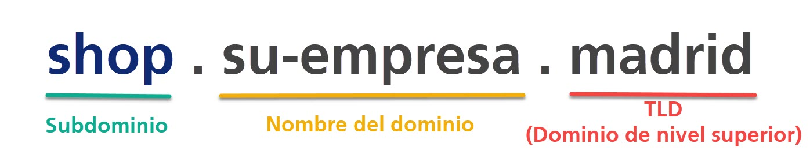
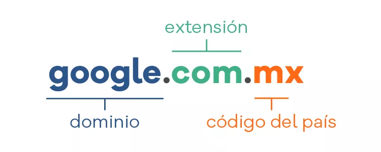

Los dominios y subdominios son componentes clave en la estructura de Internet, que permiten la identificación y localización de sitios web y otros servicios online. A continuación, se describen sus características, funcionamiento y diferencias.
Un dominio es la dirección única y legible que se utiliza para acceder a un sitio web en Internet. Los dominios forman parte del Sistema de Nombres de Dominio (DNS), que es un sistema jerárquico y descentralizado que traduce las direcciones IP numéricas de los servidores en nombres de dominio fáciles de recordar. Un dominio está compuesto por dos partes principales:
Es la parte que identifica de manera única al sitio web o servicio, como "example" en "example.com".
Es el sufijo que sigue al nombre del dominio y ayuda a clasificarlo o identificar el tipo de organización o país. Ejemplos incluyen ".com" (comercial), ".org" (organización), ".gov" (gubernamental), o extensiones geográficas como ".es" para España o ".mx" para México.
El proceso de registro de un dominio implica la compra de los derechos de uso de un nombre único dentro de un determinado TLD (Top-Level Domain, o dominio de nivel superior) por un periodo de tiempo, generalmente de 1 a 10 años. Algunos servicios de registro de dominios populares son GoDaddy, Namecheap y IONOS.
Un subdominio es una parte adicional del dominio principal, que permite crear secciones o divisiones dentro de un mismo sitio web. Los subdominios se utilizan comúnmente para separar diferentes áreas de un sitio, ofreciendo una forma más estructurada y fácil de acceder a contenido diverso bajo el mismo dominio principal.
Los subdominios tienen varias aplicaciones, tanto para la organización interna como para fines de SEO (optimización en motores de búsqueda). A continuación, se describen algunos de sus usos más comunes:
Permiten organizar un sitio web en distintas secciones sin necesidad de comprar dominios adicionales. Esto es útil, por ejemplo, para separar el blog de la tienda online o la documentación técnica.
A veces, los subdominios se utilizan para dirigir tráfico a distintas áreas del sitio o incluso para crear contenido específico que se enfoque en ciertos términos de búsqueda. Sin embargo, algunos expertos en SEO prefieren usar carpetas (en lugar de subdominios) por considerarlos más efectivos en términos de autoridad de dominio.
Los subdominios también se utilizan en entornos de prueba o desarrollo. Un subdominio como dev.example.com podría ser utilizado por un equipo de desarrollo para probar nuevas características sin que afecten al dominio principal.
Para sitios web globales, los subdominios también pueden emplearse para adaptar el contenido a diferentes idiomas o regiones, como en es.example.com para el contenido en español o fr.example.com para el contenido en francés.